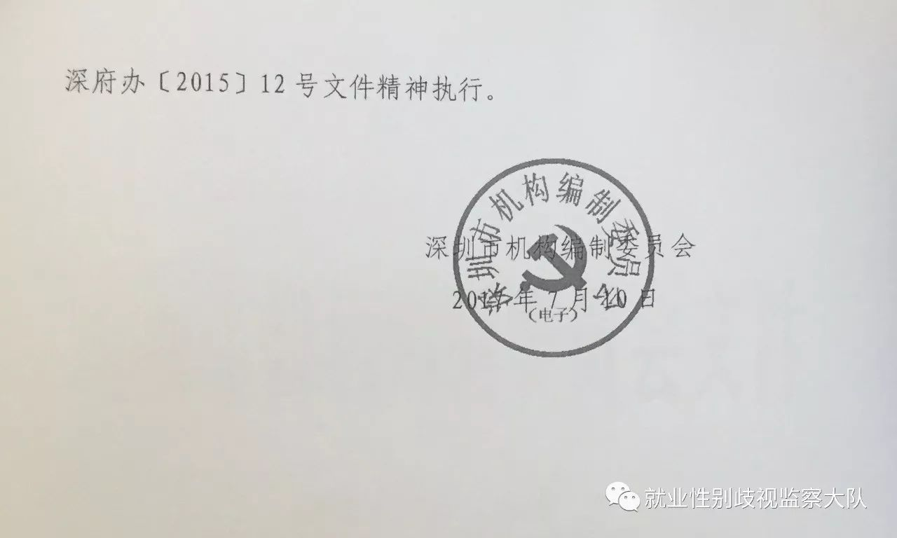

邀请函｜深圳市性别平等促进工作机构已挂牌成立，那就开始干活吧！！
深圳市性别平等促进工作机构在2017年7月10日已挂牌成立～～👏👏👏
这是在黄沙律师长达一年之久不懈辗转各个相关部门进行调查交涉推动的结果，
终于促成了这个原本应该在四年前就该成立的机构正式成立。关于机构的设立实施以及机制问题，黄沙律师还会持续推动和跟进。


既然这个促进性别平等的机构已经成立，不如现在就开始干活吧，发挥机构作用。
以下是黄沙律师写给该机构的邀请函，希望性别平等促进工作机构能出席深圳市就业性别歧视第一案的公开审理，到场旁听，表明坚决反对性别歧视的态度和立场。
深圳市性别平等促进工作机构领导：
您好，
我是黄沙，长期关注就业歧视议题。是深圳市就业性别歧视第一案的代理律师。
《深圳经济特区性别平等促进条例》第十六条是规定：“用人单位在招聘、录用人员时，除国家法律另有规定外，不得设置性别要求，不得以性别、婚姻、生育等为理由拒绝招录某一性别或者提高某一性别的招录标准……违反前款规定的，由人力资源和社会保障部门责令限期改正；逾期拒不改正的，处三千元以上三万元以下的罚款。”
但就算条例有明确规定性别就业歧视时，各劳动监察大队可以对违规企业进行限期整改或罚款，但是由于各劳动监察大队对于性别就业歧视的意识并不足，也不会主动去纠察企业的性别就业歧视的行为，其是要坐等举报人递交完整举报材料才会去进行核实。这种消极的执法态度才会导致深圳目前性别就业歧视的状况并无多大的改善。
2017年2月11日，我当事人周月（化名）在网站浏览招聘广告时发现第三人兴百业科技（深圳）有限公司发布的广告中存在性别歧视。她认为该企业存在违法行为，于是向深圳市人力资源和社会保障局进行举报，要求对第三人进行行政处罚。2017年3月29日，深圳市人社局对苟月舟作出的举报给予回复，称，经调查确认第三人的违法行为，并责令改正。鉴于第三人已经改正，依法不予处罚撤销立案。但周月在收到“反馈书”后发现，第三人在赶集网、深圳ek人才网等网站发布的保安、物管和污水处理等岗位招聘信息中，依然存在性别歧视现象，并未改正其违法行为。周月认为这种情况不符合深圳市人社局所说的“违法行为已经改正，依法可以不予处罚”，人社局不能援引此条款作为撤销立案的依据。撤销立案的行为属违法行为。故将深圳市人力资源和社会保障局告上法庭。2017年7月13日，深圳市福田区人民法院正式立案受理周月的诉讼申请。案件将于2017年10月25日9时30分在深圳市盐田区人民法院第六审判庭公开审理。
而就在13日立案当天，我与市妇联交涉中得知在自己一年多的推动下，迟迟四年没有成立的市性别平等促进机构已正式挂牌成立。能否贯彻落实《深圳经济特区性别平等促进条例》，还要看深圳市性别平等促进机构在其中发挥的作用。故邀请贵机构在25日参加公开审理的旁听，及时了解民众诉求，并将反对就业性别歧视意见带给法院，积极推动性别平等工作。
盼复。
黄沙
2017年10月18日
作为深圳市就业性别歧视第一案的代理律师，黄沙于上周也向深圳市妇联发出邀请，希望对方可以到审理现场旁听。为黄沙律师点赞～～～
点击阅读原文，阅读黄沙律师撰写的关于《深圳经济特区性别平等促进条例》研究报告，性别平等促进工作机构是什么？二者有什么关系？点进去看一看吧。
报告作者黄沙系广东律师，长期关注公益、性别、LGBT领域。
转载已获授权。